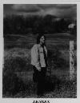

Home Artist links

Senses - Fields Unsown
| Artist: | Senses |
| Title: | Fields Unsown |
| Label: | self produced SEN001 |
| Length(s): | 35 minutes |
| Year(s) of release: | 1996 |
| Month of review: | 06/1997 |
Line up
Joan Morbee - vocals, keyboards and acoustic guitar
Don Digiacopo - bass
with session musicians
Bruce Uchitel - lead guitar
Vinnie DeNunzio - drums
Tracks
| 1) | Under The Weight Of The Rain | 5.32
|
| 2) | Take A Stand | 4.33
|
| 3) | Fields Unsown | 6.10
|
| 4) | Free | 3.20
|
| 5) | In Light Of The Moon/reflection/high Tide | 9.12
|
| 6) | Burn The Candle Down | 6.27
|
Summary
Having received the CD with elaborate info from Joan Morbee I can tell
you, that the band was formed in 1994 in Augusta.
Btw this is my second review. The first got lost in the morass of my
filesystem :( . It is more or less a translation of the Dutch one meant
for IO Pages.
The music
Fields Unsown of the band Senses is striking for three reasons. The first
is that the leader is a woman, wwhich is a rare sight in progressive
rock, the second is that two session musicians were used to fill
this album (two of the members of the band took off just before the
recording started), but also because this CD combines both melodic and
percussive piano with rather heavy guitarwork. Also not all music on this album
can be labeled as progressive. Especially Take a Stand and Free
are rocking songs. The level of "progressiveness" as one might say is,
speaking for myself of course, high enough on the rest of the album
and the rocking songs are not bad either.
The album starts very well with some nice piano playing. This piano work
evokes both Yanni and Ciani in my ears, while the vocal parts of Joan, she
sings rather low and loud, remind me of Bill Berends of Mastermind. Musically
however, the music of Senses can be powerful, but not as bombastic as the
keyboard dominated ELPish sound of Mastermind.
Conclusion
Like I said the music can be heavy as well as delicate and also sometimes the
raunchy guitar and the piano combine and it still makes sense. A point of
criticism I would like to raise is that although the combination is original,
the music has a sameness over it that is hard to shake off. This is partly
because the vocal melodies and Joan's singing are all rather similar.
Still, a welcome change from the run of the mill progressive stuff that
tend to visit my CD player.
© Jurriaan Hage